Tatuadora em Curitiba
AnaDias
Especialista em pontilhismo. Mandalas exclusivas e peças grandes feitas ponto a ponto, do desenho à última sessão.
Traço Nobre · Bigorrilho Premiada em pontilhismo
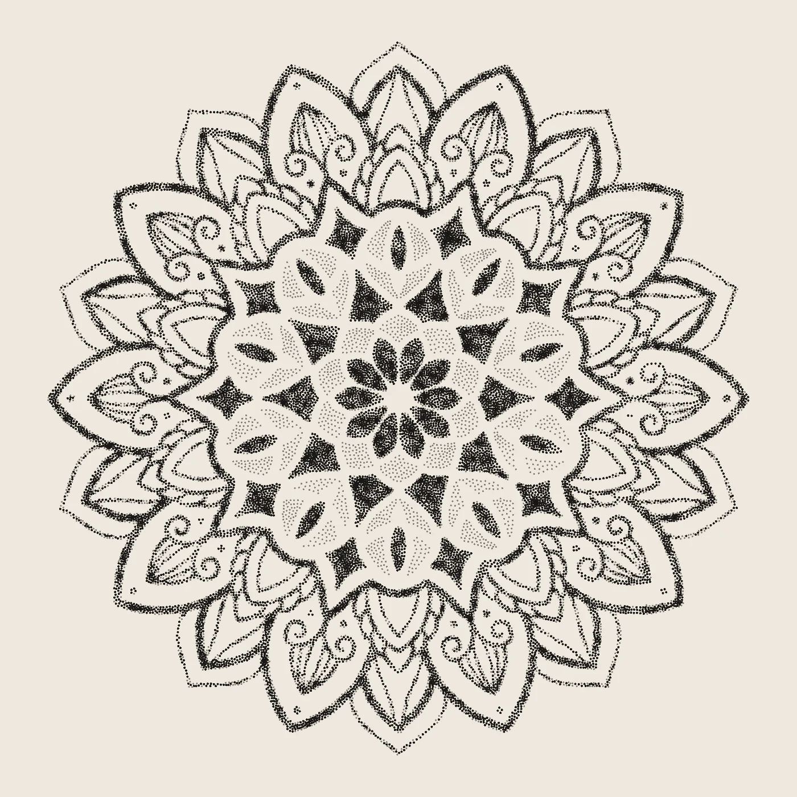
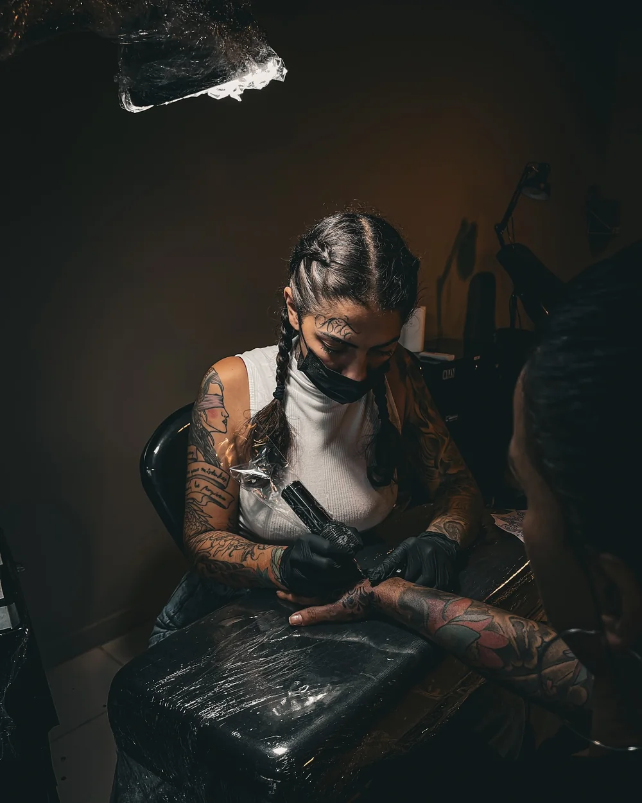
Sobre a Ana
Arte que cura
Ana desenha desde criança e, no estúdio, a técnica que escolheu foi a mais paciente de todas: o pontilhismo. Sombra, volume e degradê saem de milhares de pontos, um de cada vez, até o desenho aparecer inteiro na pele.
A mandala é a assinatura. Nenhuma se repete, porque cada uma é desenhada para a pessoa e para o lugar do corpo onde vai morar. Além delas, ela leva o ponto para retratos, bichos e fechamentos, e estuda realismo em preto e cinza.
“Cada ser é único e merece sua mandala exclusiva.”
- 9 anos tatuando
- Premiada na categoria pontilhismo
- Tattoo Week e Art Tattoo Expo Sul
Portfólio
Trabalhos
Fotos do Instagram da Ana, do recém-feito ao fechamento. Toque numa foto para ampliar.
Peças grandes
Horas de ponto
Pontilhismo é paciência. Estas são algumas das peças que mais tempo levaram, várias delas feitas ao vivo em convenção.
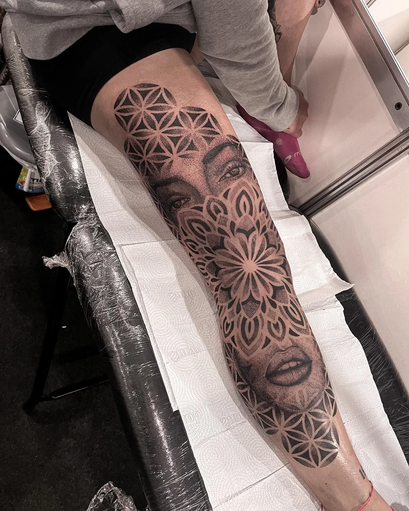
20 h
Art Tattoo Expo Sul
Perna inteira em pontos, feita no estande da convenção.
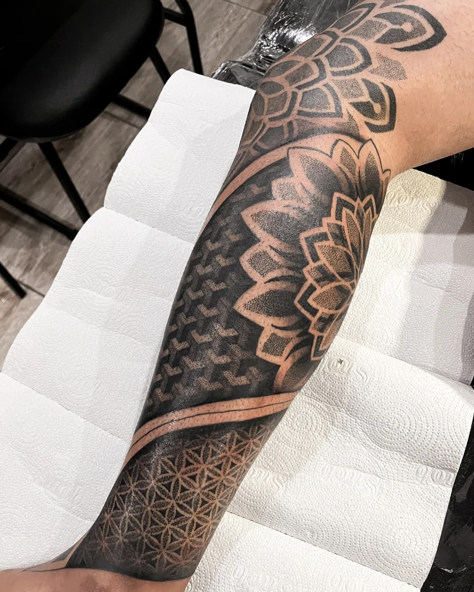
35 h
Sete sessões
Antebraço fechado com mandala, geometria e degradê.
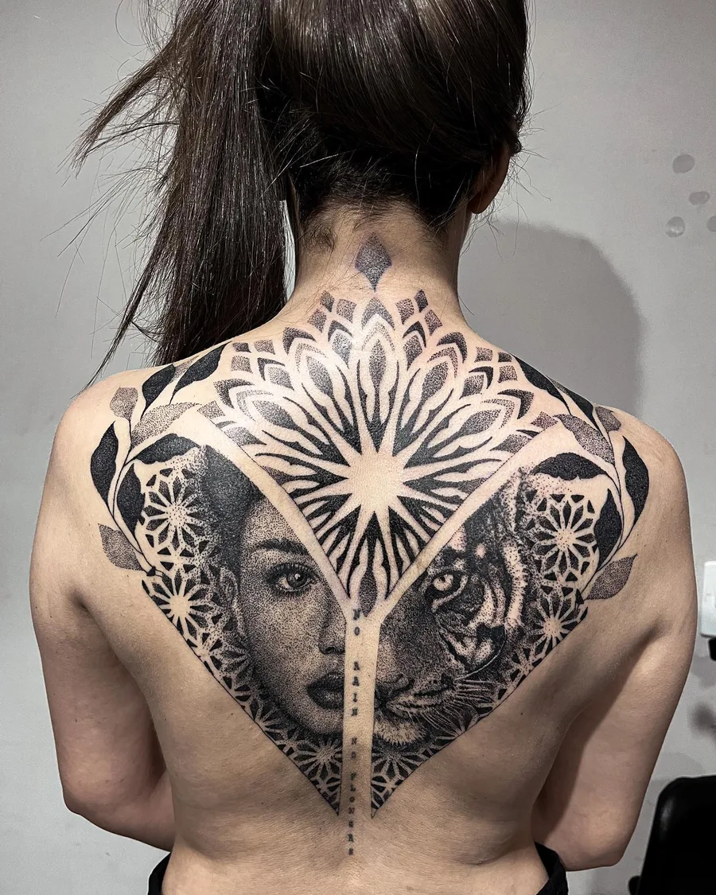
15 h
Costas em dois dias
Mandala, retrato e tigre fundidos no mesmo desenho.
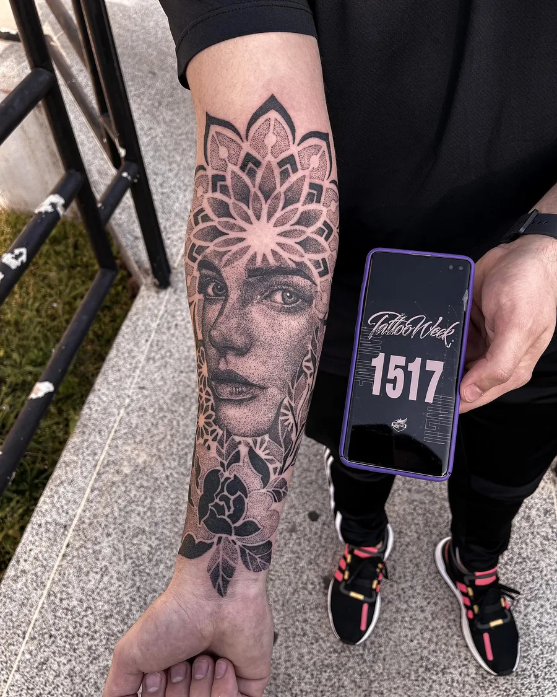
11 h
Tattoo Week
Retrato com mandala para a maior convenção do Brasil.
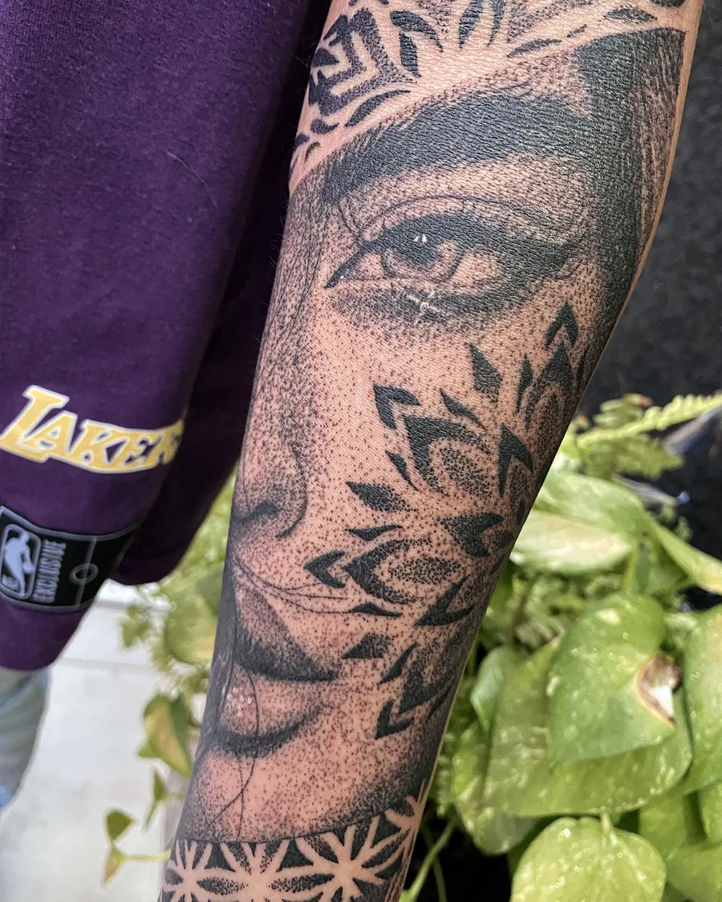
★
Premiada
Peça premiada na categoria pontilhismo.
Cicatrizadas
O ponto depois de curar
Tatuagem boa é a que continua bonita meses e anos depois. O pontilhismo cicatriza leve e mantém o degradê, e a Ana acompanha cada uma de perto, com o que os clientes mandam de volta.
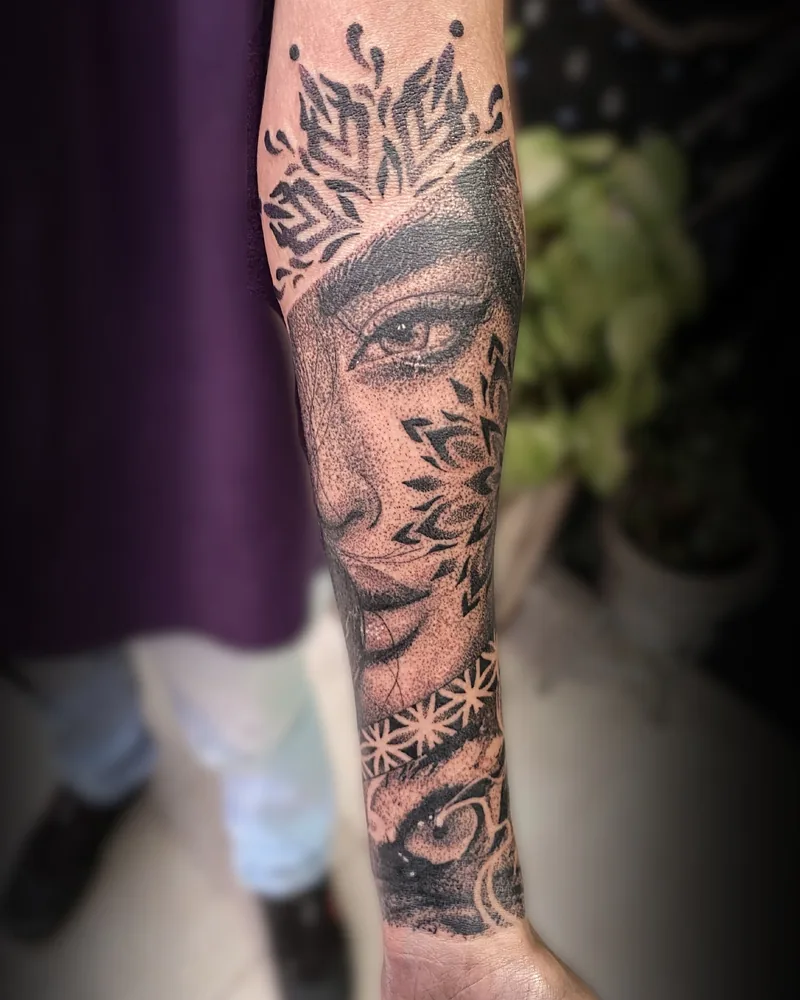
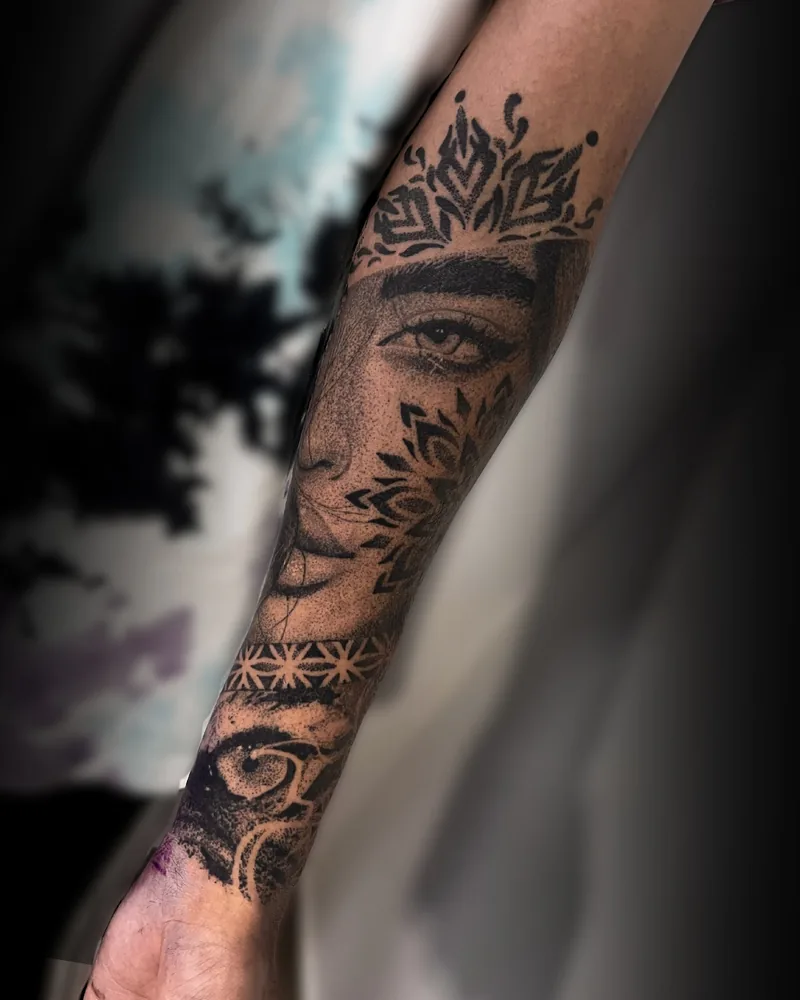
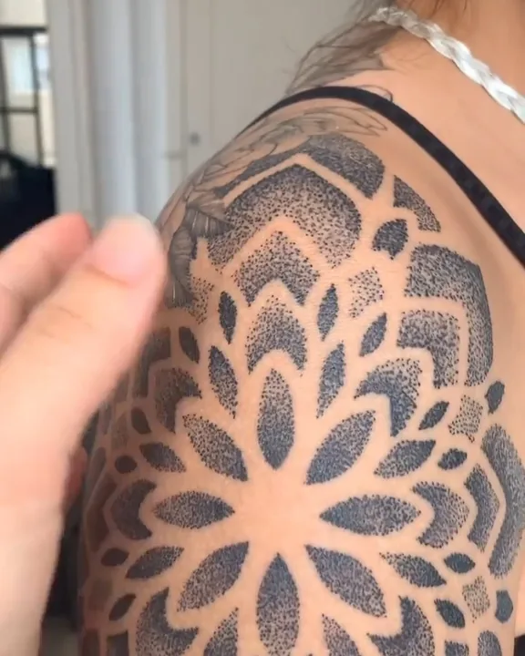
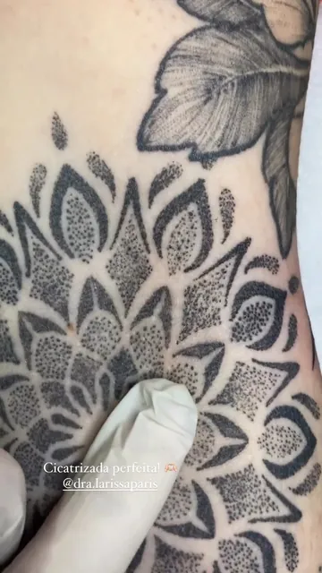
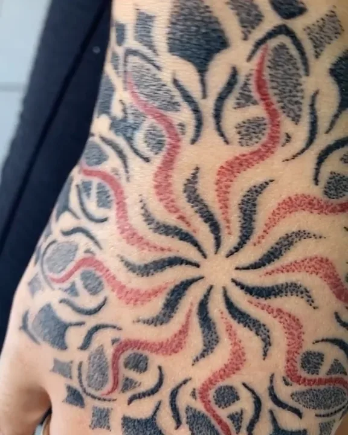
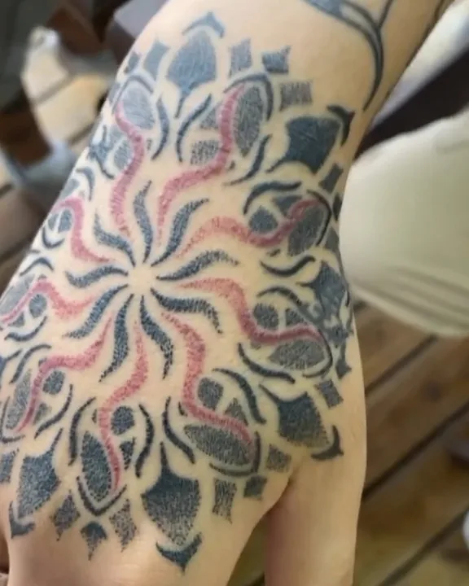
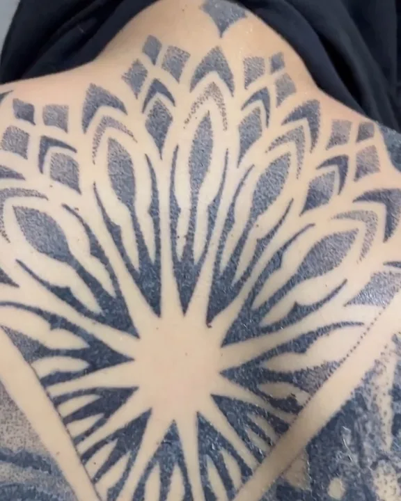
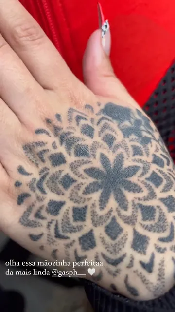
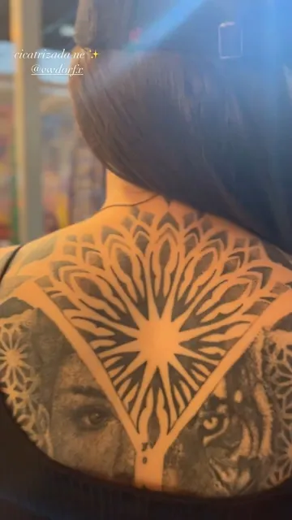
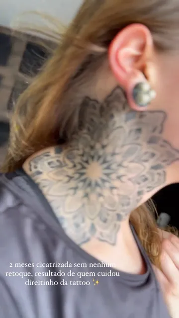
Disponíveis
Artes prontas para tatuar
Desenhos da Ana que estão à espera de alguém. Gostou de um? Mande o print na DM e ela adapta ao seu corpo.
Feedbacks
O que chega na DM
Tem cliente que tatua com a Ana há sete anos. Estas são mensagens que ela recebeu depois da sessão, do jeito que chegaram.
“Queria muito agradecer pelo seu trabalho, foi realmente incrível. Acho muito foda quando a gente acha uma profissional e se identifica com o trabalho dela. Seus traços são lindos, você é super rápida e cuidadosa.”
Cliente, sol e lua no braço
“Vim te agradecer de novo, porque eu tô amando demais as tattoos. Eu realmente acertei em te escolher pra tatuar. Obrigada de coração.”
Bárbara
“Obrigada pelas tatuagens, ficaram lindas, e principalmente por fazer parte dessa tatuagem tão especial pra mim!”
Cliente
“Obrigada, Ana! Sem palavras! Logo mais volto para as próximas.”
Gabrielle
Como marcar
Da ideia à última sessão
Conte a ideia na DM
Mande o que você imagina, referências, o lugar do corpo e o tamanho aproximado em centímetros. Uma foto do local ajuda muito.
A arte é desenhada para você
A Ana cria o desenho exclusivo e encaixa no seu corpo. Mandala nenhuma sai igual a outra.
Sessão no Traço Nobre
No pontilhismo a agulha trabalha em pontos, e a sessão costuma ser mais leve do que parece. Peças grandes são divididas em várias sessões.
Cuidados na cicatrização
Nada de sol, piscina e mar, sem coçar, e seguir à risca as recomendações. É isso que mantém o ponto nítido por muitos anos.
Onde ela atende
Traço Nobre
Casa de tatuagem e piercing no Bigorrilho, em Curitiba, com bar próprio no mesmo endereço. É lá que a Ana atende com hora marcada.
Rua Lúcio Rasera, 175Bigorrilho, Curitiba – PR
80710-230
Sua mandala ainda não existe
Ela começa numa conversa. Chame a Ana no Instagram e conte a sua ideia.
Chamar @anadiastattoo